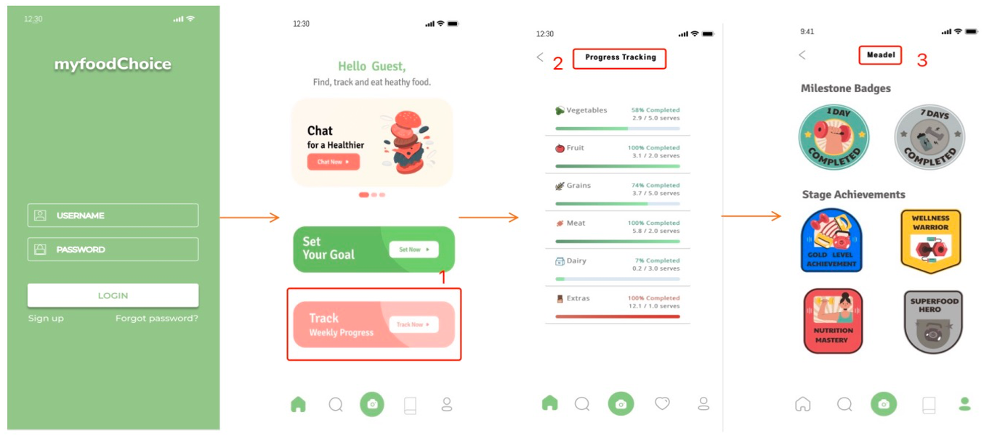
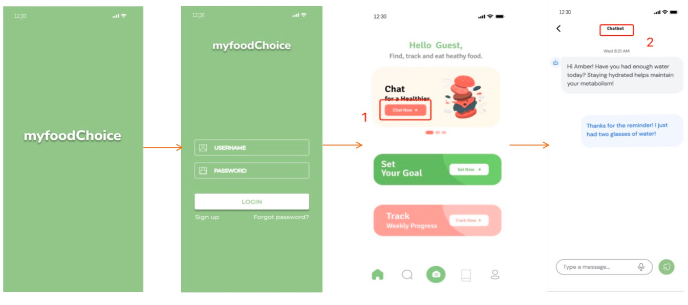

Project Overview
This project is a smart nutrition tracking app that helps users set health goals, record meals, review progress, and receive supportive suggestions for healthier food choices.
Swift iOS Application
This project is a smart nutrition tracking app that helps users set health goals, record meals, review progress, and receive supportive suggestions for healthier food choices.
I designed the core mobile user flow and screen structure, including goal setup, image-based food input, progress review, recipe recommendations, and nutrition chatbot interaction.




